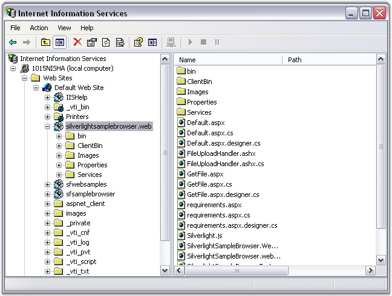

This section discusses the details on how the Silverlight samples are set up on your machine to run against Internet Information Services (IIS) and how the associated scripts and images are picked up during run-time.
Clicking the View Silverlight Samples link in the dashboard opens the Silverlight Sample Browser. If the machine is not installed with IIS, samples will open from the FileSystem. If the machine is IIS installed and working, Syncfusion samples will be configured in IIS as shown below.

Figure 54: Internet Information Services
The silverlightsamplebrowser.web is the virtual directory, which points to the Silverlight Sample Browser. The xml, .mdb, or other data files used in the samples are located in the Common\Data folder (C:\Documents and Settings\USER NAME\My Documents\Syncfusion\EssentialStudio\x.x.x.x\Common\Data is the default location).
Samples that are using .mdf files will be referring to the database from a common external server i.e, samples.syncfusion.com.